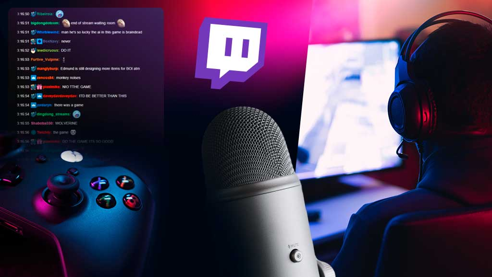

El streaming es una forma de consumir contenido (video, música, juegos, etc.) a través de internet sin necesidad de descargarlo. Hoy es una de las principales maneras en que las personas ven películas, escuchan música o interactúan en línea en tiempo real.
El streaming es una forma de consumir contenido (video, música, juegos, etc.) a través de internet sin necesidad de descargarlo. Hoy es una de las principales maneras en que las personas ven películas, escuchan música o interactúan en línea en tiempo real.
Acceso inmediato al contenido Gran variedad de opciones Disponible en casi cualquier dispositivo con internet
Depende de una buena conexión a internet Puede requerir suscripciones pagadas Consumo alto de datos móviles
El streaming ha cambiado cómo consumimos contenido, reemplazando la TV tradicional y los medios físicos. Hoy es común usar apps como Spotify o Netflix en cualquier momento y lugar.

Hoy en día, el streaming está dominado por plataformas que ofrecen distintos tipos de contenido. En video, destacan servicios como Netflix, Disney+ y Amazon Prime Video, que ofrecen series, películas y producciones originales. En música, plataformas como Spotify y Apple Music permiten acceder a millones de canciones. También existen plataformas de streaming en vivo como Twitch y YouTube, donde los usuarios pueden interactuar en tiempo real con creadores de contenido. Cada plataforma compite por ofrecer experiencias únicas y contenido exclusivo.
El streaming no se limita a un solo formato, sino que se divide en varias categorías. El streaming bajo demanda permite ver contenido en cualquier momento, como series o películas. El streaming en vivo, en cambio, se centra en eventos que ocurren en tiempo real, como conciertos, transmisiones de videojuegos o noticias. También existe el streaming interactivo, donde el usuario puede influir en lo que sucede, como en algunos videojuegos o experiencias digitales. Esta variedad ha ampliado las posibilidades del entretenimiento, adaptándose a diferentes gustos y estilos de vida.
El streaming ha transformado completamente la industria del entretenimiento. Ha cambiado la forma en que se producen y distribuyen películas, series y música, dando más oportunidades a creadores independientes y reduciendo la dependencia de medios tradicionales como la televisión o la radio. Además, ha permitido que contenidos de diferentes países lleguen a audiencias globales, generando fenómenos culturales internacionales. Sin embargo, también ha creado desafíos, como la fragmentación del contenido entre múltiples plataformas y la saturación de opciones para los usuarios.
El futuro del streaming apunta hacia una mayor personalización y calidad. Con el uso de inteligencia artificial, las plataformas pueden recomendar contenido cada vez más ajustado a los gustos del usuario. También se espera una mejora continua en la calidad de imagen y sonido, incluyendo resoluciones más altas y experiencias inmersivas. Además, el streaming podría integrarse aún más con tecnologías como la realidad virtual y aumentada, creando nuevas formas de consumir contenido. A medida que evoluciona, seguirá redefiniendo cómo las personas se entretienen y se conectan con el mundo digital.